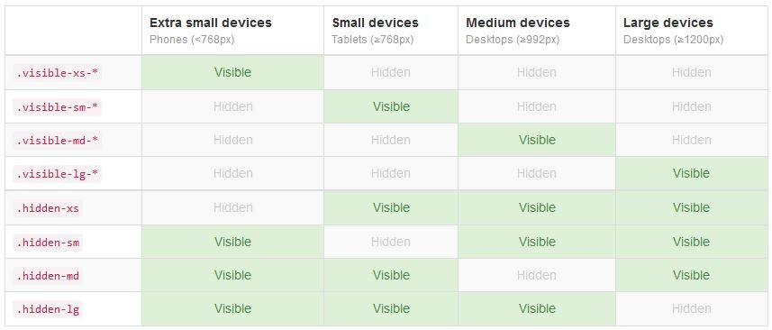
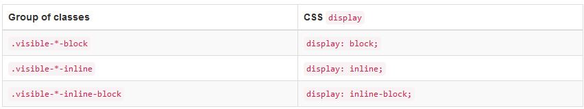
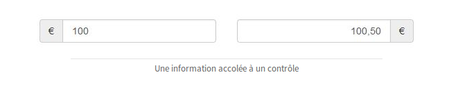
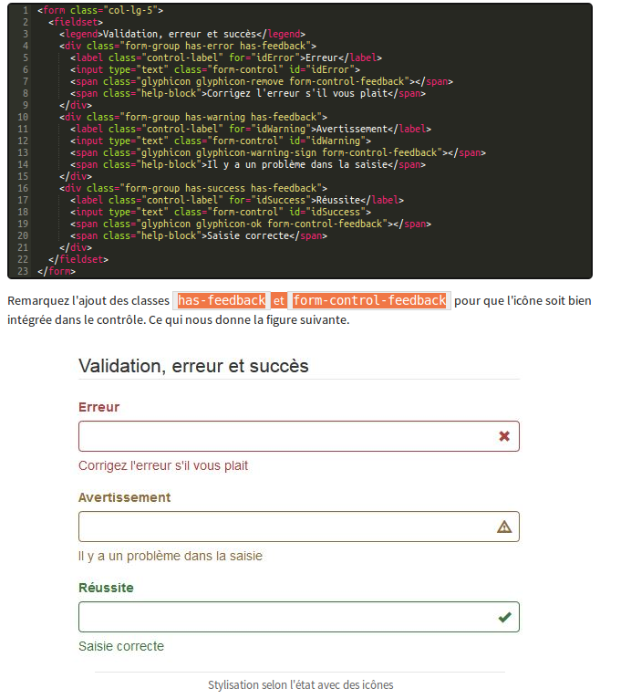

<col> cette class représente une colonne , on dispose de 4 bateries: <col-xs-1> ou
<col-sm-1> ou<col-md-1> ou <col-lg-1>
<container> contient et centre la grille sur une largeur fixe, qui s'adapte en fonction de la largeur de
l'écran
<container-fluide> permet à la grille d'occuper toute la largeur.
<col-*-offset-1>permet aussi de sauter des colonnes.
<col-lg-push-*>permet de décaler une colonne vers la droite
<col-lg-pull-*>permet de décaler une colonne vers la gauche
Partie 2
<blockquote> permet de mettre en valeur un block de texte
<adress> permet de mettre une apparence d'adresse
<clearfix> réinitialise les éléments flottants qui suivent pour les ramener dans le flux normal, et
éviter qu'ils viennent recouvrir les éléments précédents
<visible-*> et <hidden-*>:


Partie 3
<list-unstyled> à appliquer à la balise <ul>, supprime les puces
<list-inline> permet d'avoir une liste en ligne
<dl-horizontal> permet d'avoir une description horrizontal
<table>fixe quelques styles et crée des lignes de séparation horizontales
<table-bordered> c'est la classe pour avoir des bordures
<table-striped> cette classe ajoute un fond avec un gris très léger pour les lignes impaires (1, 3,
…)
<table-condensed> cette classe permet de condenser le tableau pour qu'il occupe moins de place
verticalement
<table-responsive> fait apparaître une barre de défilement
<info> <success> <danger> <warning> <active> permet de colorier le fond des
lignes
Partie 4
<form> créer un formulaire
<form-control> permet que les contrôles occupent toute la largeur disponible
<form-group> permet d'améliorer l'espacement
<well> ajoute une jolie stylisation
<help-block> rendre plus discret le texte d'aide situé au-dessous de la zone de texte
<form-horizontal>permet de placer un formulaire horizontalement
<form-inline> styliser et reduire la largeur*(au dessus de 768px) du contenus
<input-lg>et<input-sm> permet d'ajuster la taille d'un formulaire
<input-group> et <input-group-addon> servent à accoler une information à un contrôle
de formulaire :

<has-feedback><form-control-feedback>:

Partie 5
<img-responsive> pour rendre l'image responsive
<img-rounded> coins arrondis
<img-circle> image arondi
<img-thumbnail> image avec un lisséré blanc
<btn> <btn-default> dans une balise, <button>,<a> ou
<input> Pour créer un bouton avec Bootstrap
<btn-block> règle la dimension du bouton sur la dimension de son contenant.
<btn-group> et <btn-group-vertical> grouper des boutons horizontalement et
verticalement
<btn-group-jutified> avec <btn-group>répartis harmonieusement et uniformément dans un
contenant